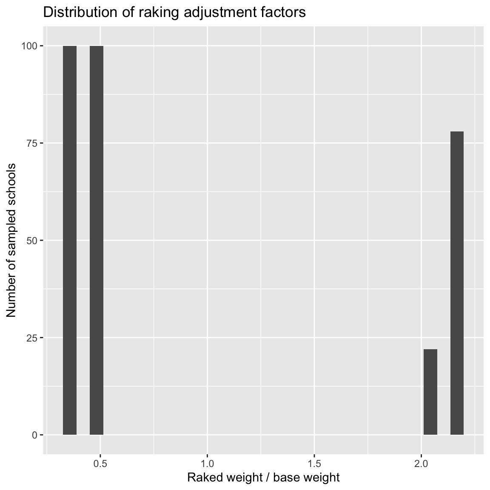

# Install once if needed:
# install.packages(c("survey", "dplyr", "ggplot2", "knitr"))
library(survey)
library(dplyr)
library(ggplot2)
library(knitr)
options(survey.lonely.psu = "adjust")Raking Survey Weights in R
Why weighting is needed?
A survey estimate is usually intended to describe a target population, not merely the people who happened to respond. If every population unit had the same probability of selection and the same probability of response, an unweighted sample mean would often be defensible. In practice, survey data often deviate from that ideal.
The basic survey weight can be written as
\[ d_i = \frac{1}{\pi_i}, \]
where \(\pi_i\) is unit \(i\)’s probability of selection. Raking starts with a base or design weight \(d_i\) and then multiplies it by an adjustment factor \(g_i\):
\[ w_i = d_i g_i. \]
The goal is to make the weighted sample match known population margins. For example, suppose the true population is 51% women and 49% men, but your weighted sample is 56% women and 44% men. A raking adjustment can reduce weights for women and increase weights for men until the weighted sample matches the population gender margin. Then it can repeat the same process for age, education, region, race/ethnicity, or other benchmark variables.
What is raking?
Raking is also called iterative proportional fitting. It adjusts weights so that the weighted sample totals match several known marginal distributions.
Suppose \(X\) is a categorical benchmark variable, such as age group, with categories \(c = 1, \ldots, C\). Raking seeks weights \(w_i\) such that
\[ \sum_{i \in s} w_i I(X_i = c) = N_c \]
for each category \(c\), where \(N_c\) is the known population total for category \(c\).
When we rake to several variables, the algorithm cycles through them:
- Adjust weights to match the population margin for variable 1.
- Using those adjusted weights, adjust again to match variable 2.
- Continue through all raking variables.
- Repeat the cycle until all margins are close enough to their population targets.
The important idea is that raking matches margins, not necessarily the full joint distribution. If you rake to gender and age separately, the final data will match the gender distribution and the age distribution. It will not necessarily match every gender-by-age cell unless you explicitly rake or poststratify to that joint distribution.
Raking, poststratification, and calibration
These terms are closely related, but they are not identical.
| Method | What it uses | What it matches | When it is useful |
|---|---|---|---|
| Poststratification | One full joint population table | Joint cells exactly | You know the full cross-classification, and sample cells are not too sparse |
| Raking | Several marginal population tables | Margins exactly, not necessarily joint cells | You know separate margins but not a full joint table, or the full table is too sparse |
In R, the survey package provides both rake() and postStratify(). The rake() function is useful when the full joint distribution is not available. The postStratify() function is useful when you have a full joint population table. This handout focuses on raking, but the same principles apply to poststratification.
Choosing raking variables
Good raking variables usually have four properties:
- Known accurately for the population. Census, registry, frame, or administrative totals are better than weak estimates.
- Measured comparably in the sample and population source. The categories must mean the same thing.
- Related to response propensity and/or key outcomes. Weighting on irrelevant variables can increase variance without reducing much bias.
- Not too sparse. Each category should have enough sample observations to support the adjustment.
For person-level surveys, common raking variables include age group, sex or gender, race/ethnicity, education, region, urbanicity, party registration, and sometimes household size or phone status. The exact choice should be driven by the sampling design, likely nonresponse mechanisms, and the substantive variables to be analyzed.
Worked example: California Academic Performance Index data
This example uses the api datasets included with the R package survey. These are real California school data. The full population file, apipop, contains all California schools with at least 100 students. This makes it ideal for teaching: we can treat apipop as the known population, create an intentionally biased sample from it, and then rake that biased sample to known school-level margins.
The unit is a school, not a person. That is fine for learning the mechanics of raking: the same logic applies to person surveys when the sample data and population benchmarks are person-level.
Packages
Sample from the population
For illustration, we create an intentionally biased sample from the population. Such a sample may exist due to the use of a non-probability sampling method, differential nonresponse, or other practical issues.
The population contains many more elementary schools than middle or high schools. To make the bias easy to see, we instead draw the same number of schools from each school type: 100 elementary, 100 middle, and 100 high schools. The resulting sample overrepresents middle and high schools relative to the population, so the stype margin will not match before raking.
data(api, package = "survey")
set.seed(5244)
n_per_school_type <- 100
convenience_sample <- apipop %>%
group_by(stype) %>%
slice_sample(n = n_per_school_type) %>%
ungroup() %>%
mutate(base_weight = nrow(apipop) / n())
# Full population and biased sample sizes
nrow(apipop)[1] 6194nrow(convenience_sample)[1] 300We can calculate the average school performance score in the population and the convenience sample:
pop_api00_mean <- mean(apipop$api00)
convenience_sample_api00_mean <- mean(convenience_sample$api00)
cat("Population mean API score:", pop_api00_mean, "\n")Population mean API score: 664.7126 cat("Convenience sample mean API score:", convenience_sample_api00_mean, "\n")Convenience sample mean API score: 652.1867 Create the original survey design object
Here we view the convenience_sample like a sample from SRS, though it was created to be compositionally biased. We will not do any weighting yet to mimic the typical small scale survey setting.
Find population margins
In real survey practice, the population margins often come from a census, administrative file, high-quality benchmark survey, or sampling frame. Here we can derive them directly from apipop. We consider three raking variables: stype (school type), sch.wide (Met school-wide growth target?), and comp.imp (Met Comparable Improvement target?). These are all categorical variables with known population totals.
pop_stype <- as.data.frame(xtabs(~stype, data = apipop))
pop_schwide <- as.data.frame(xtabs(~sch.wide, data = apipop))
pop_compimp <- as.data.frame(xtabs(~comp.imp, data = apipop))
pop_stypepop_schwidepop_compimpThe survey::rake() function expects each population margin to be either a table or a data frame where the final column is the population total. Here the final column is named Freq, which is exactly what as.data.frame(xtabs()) creates.
Compare sample margins to population margins before raking
Before raking, inspect how far the weighted sample is from the population margins.
sample_stype <- as.data.frame(xtabs(~stype, data = convenience_sample))
sample_schwide <- as.data.frame(xtabs(~sch.wide, data = convenience_sample))
sample_compimp <- as.data.frame(xtabs(~comp.imp, data = convenience_sample))
sample_stypesample_schwidesample_compimpThe following code compares the sample proportions to the population proportions for each raking variable.
prop.table(table(convenience_sample$stype))
E H M
0.3333333 0.3333333 0.3333333 prop.table(table(apipop$stype))
E H M
0.7137552 0.1218922 0.1643526 prop.table(table(convenience_sample$sch.wide))
No Yes
0.26 0.74 prop.table(table(apipop$sch.wide))
No Yes
0.1730707 0.8269293 prop.table(table(convenience_sample$comp.imp))
No Yes
0.39 0.61 prop.table(table(apipop$comp.imp))
No Yes
0.2763965 0.7236035 Because the sample was intentionally biased, these margins differ from the population margins before raking.
Rake the design
Now rake the survey design to three known margins: school type, school-wide target status, and comparable-improvement status.
The code below creates a survey design object with a base weight of base_weight. The base weight is the inverse of the sampling fraction, which is the same for all schools in this case because we sampled the same number of schools from each type.
convenience_sample$base_weight <- nrow(apipop) / nrow(convenience_sample)
d_base <- svydesign(
id = ~1,
weights = ~base_weight,
data = convenience_sample
)
d_baseIndependent Sampling design (with replacement)
svydesign(id = ~1, weights = ~base_weight, data = convenience_sample)d_rake <- survey::rake(
design = d_base,
sample.margins = list(~stype, ~sch.wide, ~comp.imp),
population.margins = list(pop_stype, pop_schwide, pop_compimp),
control = list(maxit = 50, epsilon = 0.01, verbose = TRUE)
)$stype
stype
E H M
2064.667 2064.667 2064.667
$sch.wide
sch.wide
No Yes
1610.44 4583.56
$comp.imp
comp.imp
No Yes
2415.66 3778.34
$stype
stype
E H M
4438.2375 741.2253 1014.5372
$sch.wide
sch.wide
No Yes
1046.418 5147.582
$comp.imp
comp.imp
No Yes
1712 4482
$stype
stype
E H M
4420.2943 754.7365 1018.9692
$sch.wide
sch.wide
No Yes
1059.869 5134.131
$comp.imp
comp.imp
No Yes
1712 4482 d_rakeIndependent Sampling design (with replacement)
survey::rake(design = d_base, sample.margins = list(~stype, ~sch.wide,
~comp.imp), population.margins = list(pop_stype, pop_schwide,
pop_compimp), control = list(maxit = 50, epsilon = 0.01,
verbose = TRUE))Interpretation of the control arguments:
maxit = 50: allow up to 50 full cycles through the margins.epsilon = 0.01: stop once the largest remaining discrepancy is less than 0.01 population units.verbose = TRUE: print iteration information.
Verify that raking worked
Always verify the final margins. Do not assume the algorithm converged just because it returned an object.
prop.table(svytable(~stype, d_rake))stype
E H M
0.7136413 0.1218496 0.1645091 prop.table(table(apipop$stype))
E H M
0.7137552 0.1218922 0.1643526 prop.table(svytable(~sch.wide, d_rake))sch.wide
No Yes
0.1711122 0.8288878 prop.table(table(apipop$sch.wide))
No Yes
0.1730707 0.8269293 prop.table(svytable(~comp.imp, d_rake))comp.imp
No Yes
0.2763965 0.7236035 prop.table(table(apipop$comp.imp))
No Yes
0.2763965 0.7236035 The weighted totals after raking should be essentially equal to the population totals for each raking margin.
Diagnose the weights
Raking can reduce bias, but it can also increase variance if it creates highly variable weights. Weight diagnostics are not optional.
weight_diagnostics <- function(design, label) {
w <- as.numeric(weights(design))
tibble(
design = label,
n = length(w),
sum_weights = sum(w),
min = min(w),
p01 = as.numeric(quantile(w, 0.01)),
p25 = as.numeric(quantile(w, 0.25)),
median = median(w),
mean = mean(w),
p75 = as.numeric(quantile(w, 0.75)),
p99 = as.numeric(quantile(w, 0.99)),
max = max(w),
cv = sd(w) / mean(w),
kish_effective_n = sum(w)^2 / sum(w^2),
weight_deff_approx = n / kish_effective_n
)
}
bind_rows(
weight_diagnostics(d_base, "Base design"),
weight_diagnostics(d_rake, "Raked design")
) %>%
kable(digits = 3)| design | n | sum_weights | min | p01 | p25 | median | mean | p75 | p99 | max | cv | kish_effective_n | weight_deff_approx |
|---|---|---|---|---|---|---|---|---|---|---|---|---|---|
| Base design | 300 | 6194 | 20.647 | 20.647 | 20.647 | 20.647 | 20.647 | 20.647 | 20.647 | 20.647 | 0.00 | 300.000 | 1.000 |
| Raked design | 300 | 6194 | 7.382 | 7.382 | 7.813 | 10.378 | 20.647 | 44.742 | 44.742 | 44.742 | 0.81 | 181.326 | 1.654 |
The approximate Kish effective sample size is
\[ n_{\text{eff}} = \frac{(\sum_i w_i)^2}{\sum_i w_i^2}. \]
The associated weight-only design effect approximation is
\[ DEFF_w \approx \frac{n}{n_{\text{eff}}} = 1 + CV(w)^2. \]
This approximation only captures unequal weighting. It does not capture clustering, stratification, finite population corrections, or model-based variance behavior.
Inspect adjustment factors
The ratio of the raked weight to the base weight is sometimes called the g-weight or adjustment factor.
weight_df <- tibble(
base_weight = as.numeric(weights(d_base)),
raked_weight = as.numeric(weights(d_rake)),
adjustment_factor = raked_weight / base_weight
)
summary(weight_df$adjustment_factor) Min. 1st Qu. Median Mean 3rd Qu. Max.
0.3575 0.3784 0.5026 1.0000 2.1670 2.1670 weight_df %>%
ggplot(aes(x = adjustment_factor)) +
geom_histogram(bins = 30) +
labs(
title = "Distribution of raking adjustment factors",
x = "Raked weight / base weight",
y = "Number of sampled schools"
)
Large adjustment factors are a warning sign. There is no universal cutoff, but many organizations review weights when adjustment factors are below 0.3 or above 3, or when final weights are far outside the intended range. The right threshold depends on the design, sample size, target population, and analytic stakes.
Raking changes estimates most when the raking variables are associated with the outcome. If the benchmark variables are unrelated to the outcome, raking may have little effect on point estimates but can still affect standard errors through changes in weight variability.
Compare mean API scores
The population mean is the benchmark. The unadjusted sample mean reflects the compositional bias. After raking, the estimate should move closer to the population mean.
It should be noted that this analysis cannot be done in practice because the population mean is unknown. The point of raking is to adjust the sample to known margins in the hope that it will also reduce bias on unknown parameters. In this example, we can see how raking affects the estimate of api00 because we have the full population data.
mean(apipop$api00, na.rm = TRUE)[1] 664.7126coef(svymean(~api00, d_base, na.rm = TRUE)) api00
652.1867 coef(svymean(~api00, d_rake, na.rm = TRUE)) api00
663.9882 Margins are not the same as joint cells
Raking to separate margins does not necessarily reproduce the full joint distribution. The following code compares the population joint table of stype by sch.wide to the raked sample joint table.
xtabs(~stype + sch.wide, data = apipop) sch.wide
stype No Yes
E 472 3949
H 334 421
M 266 752svytable(~stype + sch.wide, d_rake) sch.wide
stype No Yes
E 512.0975 3908.1968
H 302.6501 452.0864
M 245.1212 773.8480If the full joint table is known and the cells are not sparse, poststratification to the joint table may be appropriate. If only separate margins are known, raking is often the natural choice.
Other statistical analysis with raked weights
Statistical analysis should also use the survey design object. Do not subset the raw data and then run ordinary unweighted analyses.
svyby(~api00, ~stype, d_rake, svymean, na.rm = TRUE) %>%
as.data.frame() %>%
kable(digits = 3)| stype | api00 | se | |
|---|---|---|---|
| E | E | 671.481 | 12.799 |
| H | H | 636.472 | 12.928 |
| M | M | 651.867 | 13.739 |
Survey-weighted regression uses the raked design object.
model_raked <- svyglm(api00 ~ meals + ell + stype, design = d_rake)
summary(model_raked)
Call:
svyglm(formula = api00 ~ meals + ell + stype, design = d_rake)
Survey design:
survey::rake(design = d_base, sample.margins = list(~stype, ~sch.wide,
~comp.imp), population.margins = list(pop_stype, pop_schwide,
pop_compimp), control = list(maxit = 50, epsilon = 0.01,
verbose = TRUE))
Coefficients:
Estimate Std. Error t value Pr(>|t|)
(Intercept) 859.2237 9.4283 91.133 < 2e-16 ***
meals -3.1370 0.2400 -13.068 < 2e-16 ***
ell -1.3337 0.3589 -3.716 0.000243 ***
stypeH -106.4494 11.5322 -9.231 < 2e-16 ***
stypeM -41.7272 8.7886 -4.748 0.00000321 ***
---
Signif. codes: 0 '***' 0.001 '**' 0.01 '*' 0.05 '.' 0.1 ' ' 1
(Dispersion parameter for gaussian family taken to be 3889.676)
Number of Fisher Scoring iterations: 2The point estimates come from the weighted estimating equations. The standard errors account for the survey design information stored in the design object.
Reporting raking in methods sections
We began with the design weights supplied with the survey data and adjusted them using iterative proportional fitting. The raking margins were age group, gender, education, and census region, using population totals from [benchmark source]. Raking was implemented with the
surveypackage in R. The algorithm converged when all marginal discrepancies were below 0.01 population units. Final weights ranged from [min] to [max], with a coefficient of variation of [CV] and Kish effective sample size of [n_eff]. All estimates and standard errors were computed using the raked survey design object.
Exercises
- Rake the API sample to only
sch.wide. Compare the resulting weights and estimates with the three-margin raked design. - Add
awardsas a fourth raking variable. Does the algorithm converge? How do the weight diagnostics change? - Compare raking to joint poststratification on
stype + sch.wide. What changes in the joint table? What changes in the estimate ofapi00? - Create a deliberately sparse benchmark by crossing
stype,sch.wide, andcomp.imp. What problems arise? - Using your own survey data, define two plausible benchmark margins and write the code needed to rake your design object.